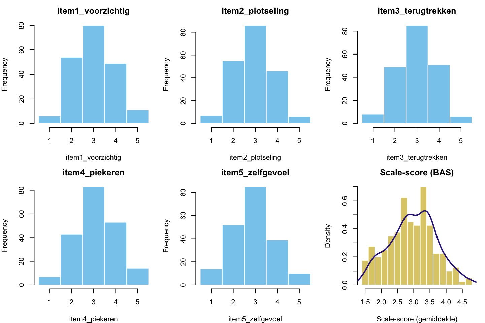
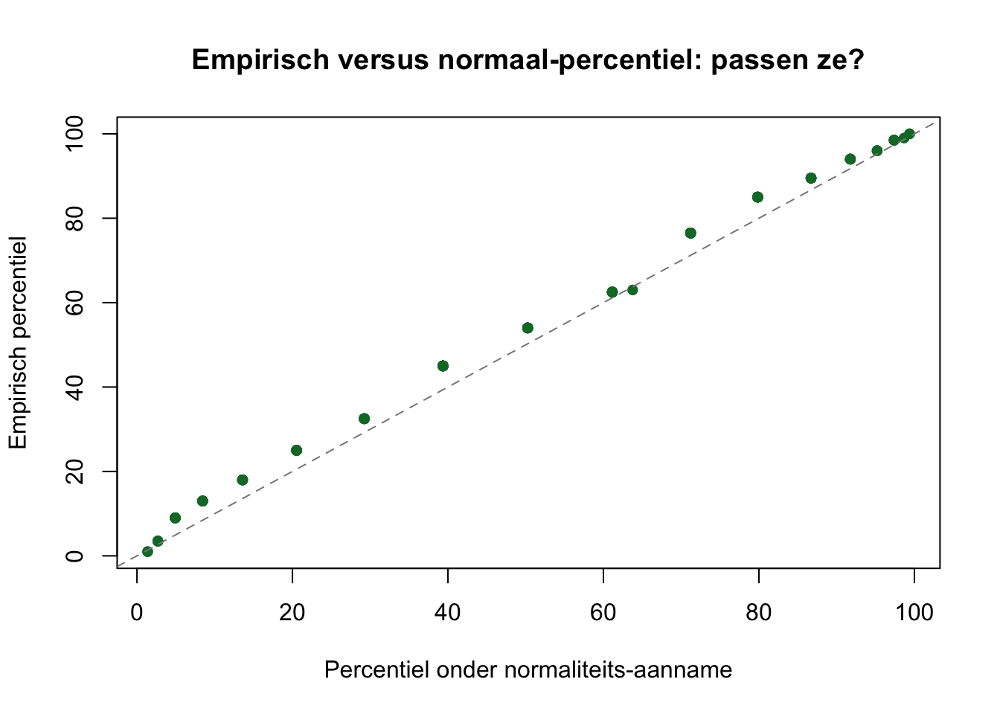

1. Meten, schaal-niveaus, norm-scoren en classificatie
Het verhaal van dit thema
Het was een grijze dinsdag in het bos toen de kraai het schrift van zijn buurman doorbladerde.
“Drie items op je angst-schaal,” zei hij. “En jouw ‘angst-score’ is het gemiddelde. Maar wat is een gemiddelde van drie items?”
“Een getal,” zei de wezel.
“Een getal zonder context. Wat zegt ‘gemiddeld \(4.2\)’ over een individu? Niets. Tenzij je weet hoe de populatie scoort. Dat heet norm-scoren — een ruwe score wordt iets pas als je hem afzet tegen wat anderen doen.”
De bunzing zat er sipjes bij. “Ik scoorde een \(3.6\). Dat klinkt gemiddeld, toch?”
“Dat klinkt gemiddeld als je niet weet wat de populatie doet,” zei de kraai. “Stel: in onze bos-populatie is \(M = 3.0\) en \(SD = 0.7\). Dan zit jij op \(z = 0.86\) — een \(T\)-score van \(\approx 59\). Dat is boven gemiddeld. Niet veel boven, maar wel boven. En toch noem jij jezelf gemiddeld.”
“Misleidend,” zei de wezel.
“Onvolledig,” zei de kraai. “Geen oordeel. Wel gewoon: zonder norm geen interpretatie.”
Tweehonderd dieren in dit thema. Vijf items op een \(5\)-puntsschaal die samen een angst-vragenlijst vormen — Bos-Angst-Schaal (BAS). Plus een tweede dataset met \(70\) mussen op een continue zelfvertrouwen-score, voor een mini-practical aan het einde.
De drie hoofdvragen:
Wat meten we eigenlijk? — schaal-niveaus, raw-scores, scale-scores.
Wat betekent een score? — z-scores, T-scores, percentielen.
Hoe verdeel je in groepen? — classificatie via cutoffs, en wanneer dat fout gaat.
NoteA. Wat is meten in de psychometrie?
Meten is een getal toekennen aan een eigenschap volgens een regel. Dat klinkt droog. In de praktijk: je vraagt iemand een paar dingen, je geeft die antwoorden punten, en je telt of middelt ze. Klaar — een score.
Behalve dat zo’n score alleen interpreteerbaar is als je weet:
Op welke schaal het getal staat. Een \(4.2\) op een \(5\)-puntsschaal is geen \(4.2\) op een \(0\)-\(100\) schaal. Een ordinale rang is geen interval. (We doen vaak alsof, want het werkt — maar weten dat we het doen).
Welke populatie als referentie geldt. Bunzing’s \(3.6\) is gemiddeld in de ene populatie, hoog in de andere. Geen norm = geen verhaal.
Hoe betrouwbaar de meting is. Maar dat is thema 2. Hier nemen we even aan dat de schaal werkt.
Ordinaalordinal — categorieën met rangorde, geen gelijke afstanden. Leeftijd-categorie: jong < volwassen < oud.
Intervalinterval — gelijke afstanden, geen absolute nul. Temperatuur in \(°\text{C}\).
Ratioratio — gelijke afstanden én absolute nul. Aantal succesvolle vluchten.
Likert-items zijn strikt genomen ordinaal. We doen er meestal alsof het interval is — niet helemaal correct, maar werkbaar. Onthoud dat we doen alsof; het is geen wet.
NoteB. Norm-scoren — z, T en percentielen
Een ruwe score is een getal. Een norm-score is een plek in een verdeling. Drie standaard-norm-scores:
z-scorez-score: aantal standaardafwijkingen boven of onder het gemiddelde.
\[
z = \frac{X - M}{SD}
\]
Centrum nul, \(SD = 1\). Negatief = onder gemiddeld, positief = boven.
T-scoreT-score: lineair herschaalde z-score, met \(M = 50\) en \(SD = 10\).
\[
T = 50 + 10 \cdot z
\]
Geen negatieve getallen, makkelijker uit te leggen aan niet-statistici. Bereik in praktijk meestal \(20\)-\(80\) (\(\pm 3\) SD).
Percentielpercentile (\(P\)): positie in de cumulatieve verdeling. \(P_{50}\) = mediaan; \(P_{75}\) = derde kwartiel.
Welke je gebruikt hangt af van je publiek. Statistici lezen \(z\). Klinici prefereren \(T\). Beleidsmakers willen percentielen. Inhoudelijk zeggen ze hetzelfde over dezelfde verdeling.
NoteC. Kraai-frame — wat onderzoeken we?
De kraai meet bij \(200\) dieren in zijn bos hoe ze scoren op de Bos-Angst-Schaal (BAS), vijf items elk op een \(5\)-puntsschaal. Drie vragen:
\(X\) — wat zit er feitelijk in de data? Items, scale-score, item-correlaties.
\(M\), \(SD\) — wat is de populatie-norm? Hoe ziet de verdeling eruit?
Cutoff — wie noemen we subklinisch, wie klinisch, en wat doen we met de grens?
De plagende ondertoon: een score is niets zonder norm. En een cutoff is een keuze met consequenties. Eind van dit thema weet je hoe je norm-scoren technisch doet — en waar de gevaren liggen.
NoteHoe dit hoofdstuk leest
Dit hoofdstuk volgt dezelfde drie-laagse structuur als de andere thema’s:
Verhaal-frame — kraai en consorten in het bos.
Algemene vorm — abstract, statistiek-Latijn met X, M, SD, mijn_data.
Voor onze dieren — uitvoerend, met # hekjes en concrete namen.
Daarnaast lopen er kaders doorheen, elk met zijn eigen kop: vragen om zelf te maken, antwoorden (ingeklapt — open ze pas ná je eigen poging), leesregels, alarm en don’ts. De kop zegt wat het kader is, dus je hoeft nooit op kleur te varen. T-vragen vlechten zich tussen de hoofdvragen door.
Toon-waarschuwing: dit werkboek is een tikje brutaler dan zijn MVDA-zusje. We praten met je, niet tegen je. Soms snauwen. Niet uit gemeenheid — uit didactische overtuiging dat materiaal dat raakt beter blijft hangen.
NoteRefresh — wat je uit basis-statistiek hebt meegenomen
Voordat we beginnen, even check of het volgende vertrouwd is. Zo niet: pak je oude statistiek-aantekeningen erbij.
Gemiddelde\(M\) en standaardafwijking\(SD\) — basis-statistiek week 2-3.
z-score als afstand-tot-gemiddelde-in-SD-eenheden.
Normaalverdeling als idealisering. We toetsen niet of iets normaal is in dit thema; we gebruiken de aanname om norm-scores te vertalen naar percentielen.
Percentiel = \(P_x\) betekent dat \(x\%\) van de populatie onder die score zit.
Wie deze stof kwijt is geraakt: kort terug naar je basis-stat-werkboek, hoofdstukken over centrummaten en spreidingsmaten. Dan terug.
Werkmaterialen — R-pakketten en functies
De kraai pakt zijn gereedschap
Gereedschap
Waar het voor is
Pakket
mean(), sd(), var()
Centrummaten en spreiding
base
psych::describe()
Compacte descriptives-tabel met skewness, kurtosis
psych
summary()
Snelle 5-getallen-overzicht per variabele
base
scale()
Z-scores berekenen — automatisch met \(M\) en \(SD\)
base
quantile()
Percentielen / kwartielen
base
ecdf()
Empirische cumulatieve verdeling — voor exact percentiel
base
cut()
Continu-variabele in categorieën hakken (cutoff-classificatie)
base
table(), prop.table()
Frequentie-tabellen per groep
base
hist(), density()
Verdeling visualiseren
base
rowMeans(), rowSums()
Scale-score samenstellen uit items
base
NoteWaarom scale() en niet (x - mean(x)) / sd(x)?
scale(x) doet hetzelfde als (x - mean(x, na.rm = TRUE)) / sd(x, na.rm = TRUE), maar dan in één commando en gegarandeerd correct met NA’s. Plus: het geeft je de gebruikte \(M\) en \(SD\) als attributen mee, handig voor controle.
scale() standaardiseert standaard met \(M = 0\) en \(SD = 1\) (z-scores). Voor T-scores: vermenigvuldig met \(10\) en tel er \(50\) bij op.
Notatie — symbolen voor dit thema
NoteSleutelsymbolen
\(X\) — een ruwe score (op een item of de hele schaal).
\(M\) — steekproef-gemiddelde (mean(x)).
\(SD\) — steekproef-standaardafwijking (sd(x)).
\(\mu\) — populatie-gemiddelde (theoretisch, schatten we via \(M\)).
\(\sigma\) — populatie-standaardafwijking (theoretisch, schatten we via \(SD\)).
\(z\) — z-score: \((X - M)/SD\).
\(T\) — T-score: \(50 + 10 \cdot z\).
\(P_x\) — percentiel: kans dat een willekeurige score \(\leq X\) ligt, in \(\%\).
\(N\) — omvang van de hele steekproef.
\(n\) — omvang van een deelgroep binnen die steekproef.
In dit hoofdstuk gebruiken we steekproef-statistieken (\(M\), \(SD\)) als schattingen van populatie-parameters (\(\mu\), \(\sigma\)). Een T-score gebaseerd op steekproef-\(M\)/\(SD\) is dus een geschatte T-score; bij grote \(N\) ligt die dicht bij de echte populatie-T.
TipVuistregels zijn afspraken, geen wetten
Steekproef-grootte voor norm-tabel: \(N \geq 100\) is een gangbare ondergrens voor stabiele percentiel-schattingen. Bij \(N < 50\): norm-tabel rapporteren met expliciete betrouwbaarheids-waarschuwing, of bootstrappen.
T-score-bereik: in praktijk \(20 \leq T \leq 80\) (\(\pm 3\) SD); buiten dat is een score zo extreem dat je hem hand-checked.
Cutoff-keuze: \(T \geq 65\) als “verhoogd” en \(T \geq 70\) als “klinisch hoog” zijn breed gangbaar maar niet wettelijk vastgelegd. Verschillende vragenlijsten hanteren andere drempels.
Schaal-niveau: Likert-items behandelen we als interval mits ze ten minste \(5\) niveaus hebben en de schaal-score uit \(\geq 5\) items bestaat. Onder die drempels: ordinale technieken overwegen.
NA-handling: bij hoogstens één ontbrekende waarde mag je middelen (na.rm = TRUE). Vanaf twee ontbrekend zet je de scale-score op NA: je wilt er minstens 4 van de 5 hebben. Waarom die grens zo streng staat, zie het kader NA-handling verderop.
Verschillende vakgroepen hanteren iets andere drempels. Voor je tentamen: check je eigen college-sheets.
NoteCode in dit hoofdstuk — wat moet je kunnen typen?
Code is standaard open als je hem moet kunnen typen op het R-practical-tentamen: mean(), sd(), scale(), quantile(), cut(), rowMeans(), table(). Code die alleen ter illustratie dient — psych::describe(), ggplot-decoratie, gt-tabellen — staat ingeklapt met een knopje “Toon code”. Klap hem open als je nieuwsgierig bent; voor het tentamen hoef je hem niet te reproduceren.
1.0 Project- en datavoorbereiding
Aantekeningen netjes, paden kloppen
Open de meegestuurde projectmap (01_measurement/) en dubbelklik op 01_measurement.Rproj. Daarmee staat je werkomgeving klaar: paden kloppen, RStudio kent de juiste werkmap. Niets te installeren als de pakketten (tidyverse, psych) op je computer staan; anders één keer:
Per dier: een dier_id, drie groepsvariabelen (geslacht, leeftijd-categorie, diersoort) en vijf items op een \(5\)-puntsschaal die samen de Bos-Angst-Schaal (BAS) vormen. De vijf items meten verschillende facetten van angst — voorzichtigheid, schrikachtigheid, terugtrekken, piekeren, zelfgevoel.
NoteVariabel-namen in deze dataset
item1_voorzichtig: “Ik kijk drie keer voor ik beweeg.”
item2_plotseling: “Plotse geluiden zetten me op scherp.”
item3_terugtrekken: “Ik trek me terug bij bezoek.”
item4_piekeren: “Ik blijf ’s nachts vaak hangen in nare gedachten.”
item5_zelfgevoel: “Ik twijfel snel over mijn eigen plek in het bos.”
Eén ontbrekende waarde zit op item3_terugtrekken[42] — opzettelijk, om NA-handling te oefenen.
1.1 Schaal-niveaus en raw-scores
Wat zit er in?
“Vijf items, elk op een \(5\)-puntsschaal,” zei de kraai. “Optellen, middelen, som-score, scale-score — allemaal varianten van hetzelfde idee: één getal per dier dat zegt hoe angstig hij is. Maar voor we middelen, kijken we eerst.”
NoteVoor je gaat rekenen — vijf vragen aan jezelf
Het stappenplan, opnieuw, met de techniek-keuze als laatste stap.
Wie of wat wordt er gemeten?De kraai heeft \(200\) dieren in zijn bos op vijf items genoteerd.
Wat wordt er gemeten?Vijf items van de Bos-Angst-Schaal, elk op een \(5\)-puntsschaal. Plus drie groeps-variabelen: geslacht, leeftijd-categorie, diersoort.
Onafhankelijk of afhankelijk?In dit thema is er geen voorspelmodel. We willen weten wat de scores zijn en hoe ze verdeeld zijn — beschrijvend, niet voorspellend.
Meetniveau van elke variabele?Items: ordinaal (Likert, \(5\) niveaus) — we behandelen ze als interval. Scale-score: interval. Geslacht: nominaal. Leeftijd-categorie: ordinaal. Diersoort: nominaal.
Welke techniek? Bij norm-scoren kies je geen toets. Je beschrijft: gemiddelde, SD, verdeling. En je transformeert: ruwe score \(\to\) z-score \(\to\) T-score \(\to\) percentiel.
T1 — Techniek-keuze: norm-scoren of iets anders?
NoteVraag T1 — Pen-en-papier
Voor elk vignet: kies tussen norm-scoring (z/T/percentiel), ruwe-score-rapportage, rang-statistieken of een toets (\(t\)-toets, ANOVA, …).
a)Een psycholoog meet de depressie-score (BDI-II) bij \(250\) cliënten en wil weten hoe een individuele cliënt scoort ten opzichte van de Nederlandse populatie.
b)Een onderzoeker vergelijkt twee onderwijsvormen op tentamen-cijfer (\(n_1 = 60\), \(n_2 = 60\)). Hij wil weten of de groepen verschillen.
c)De kraai meet bij \(200\) bosdieren de angst-score en wil één tabel maken die per ruwe score een percentiel-equivalent geeft.
d)Een ecoloog meet bij \(40\) wolven het jachtsucces en wil ze rangschikken — wie is de top-jager?
CautionAntwoord — open na je eigen poging
a) Norm-scoring. Een individuele score (één cliënt) interpreteren ten opzichte van een groep — hier een normeer-steekproef van \(N = 250\), waaruit je de norm-tabel bouwt. Dat is precies waar T-scores en percentielen voor zijn.
b) Toets (\(t\)-toets onafhankelijk). Twee groepen, één meting per persoon, één continue uitkomst. Geen norm-vraag — een vergelijking-vraag.
c) Norm-scoring (norm-tabel). Een tabel die elke ruwe score koppelt aan een percentiel-equivalent op basis van de bos-populatie. Zo’n opzoektabel bouw je zelf, verderop bij de mini-norm-tabel van de mus.
d) Rang-statistieken. Bij \(N = 40\) is een norm-tabel zwak (te kleine steekproef om op te normeren); een ranglijst (rank()) zegt direct wat de ecoloog wil weten — wie is eerste, tweede, derde, …
Vuistregel. Norm-scoring = individuen-tegen-populatie. Toets = groepen-tegen-elkaar. Rang-statistieken = individuen-onderling-vergelijken in kleine groep.
1.1.a Verkenning — descriptives en distributie
Voordat de kraai middelt, kijkt hij eerst.
Algemene vorm.
# Item-means en SDs.sapply(mijn_data[, items], mean, na.rm =TRUE)sapply(mijn_data[, items], sd, na.rm =TRUE)# Frequentie-tabel per item.sapply(mijn_data[, items], table)# Histogrammen.par(mfrow =c(2, 3))for (it in items) hist(mijn_data[[it]], main = it)
summary() geeft je met één commando de vijf getallen (minimum, kwartielen, maximum) plus het gemiddelde, per kolom. Let op de laatste regel onder item3_terugtrekken: die telt de ontbrekende waarde voor je. mean() en sd() hierboven lieten hem ook weg — daar staat na.rm = TRUE voor — maar ze zéggen er niets over.
summary(bos_dieren_angst[, items])
item1_voorzichtig item2_plotseling item3_terugtrekken item4_piekeren
Min. :1.000 Min. :1.000 Min. :1.00 Min. :1.00
1st Qu.:2.000 1st Qu.:2.000 1st Qu.:2.00 1st Qu.:2.75
Median :3.000 Median :3.000 Median :3.00 Median :3.00
Mean :3.025 Mean :2.945 Mean :2.99 Mean :3.12
3rd Qu.:4.000 3rd Qu.:4.000 3rd Qu.:4.00 3rd Qu.:4.00
Max. :5.000 Max. :5.000 Max. :5.00 Max. :5.00
NAs :1
item5_zelfgevoel
Min. :1.000
1st Qu.:2.000
Median :3.000
Mean :2.895
3rd Qu.:3.000
Max. :5.000
Wil je die grenzen zelf kiezen in plaats van de standaard kwartielen, dan is quantile() het gereedschap. Vraag het bijvoorbeeld de buitenste \(5\%\) aan weerskanten:
Let op de richting: quantile() gaat van een aandeel naar een score (welke score hoort bij de onderste kwart?). Dat is de omgekeerde weg van het percentiel verderop, dat van een score naar een aandeel gaat.
Toon code (vijf histogrammen + verdeling van scale-score)
par(mfrow =c(2, 3), mar =c(4, 4, 2.5, 1))for (it in items) {hist(bos_dieren_angst[[it]],breaks =seq(0.5, 5.5, by =1),col ="#88CCEE",border ="white",xlab = it,main = it,xlim =c(0.5, 5.5))}scale_score <-rowMeans(bos_dieren_angst[, items], na.rm =TRUE)hist(scale_score,breaks =20,col ="#DDCC77",border ="white",freq =FALSE,xlab ="Scale-score (gemiddelde)",main ="Scale-score (BAS)")# density() legt een gladde schatting van de verdeling over de staafjes heen.# freq = FALSE hierboven is nodig: anders staan de twee op een andere schaal.lines(density(scale_score), lwd =2, col ="#332288")

Toon code (vijf histogrammen + verdeling van scale-score)
par(mfrow =c(1, 1))
NoteVragen 1.1.a
a) Hoeveel dieren in totaal? Hoeveel ontbrekende waarden zie je op de items?
b) Welke item heeft het hoogste gemiddelde? Welke het laagste?
c) Liggen de item-SDs in dezelfde orde van grootte? Wat zou een afwijkende SD betekenen?
d) De scale-score is een gemiddelde over \(5\) items. Wat is het bereik dat in principe mogelijk is? Wat zie je in de data?
CautionAntwoord — open na je eigen poging
a)\(N = 200\). Een ontbrekende waarde op item3_terugtrekken (rij \(42\)). Vanaf \(2\) NAs op een rij zet je de scale-score op NA — dat doen we via rowMeans(., na.rm = TRUE) met een veiligheids-check, zie het kader NA-handling verderop. De ene NA hier middelt netjes mee.
b) Het hoogste gemiddelde: item4_piekeren (\(M \approx 3.12\)) — bosdieren liggen blijkbaar relatief vaak wakker. Het laagste: item5_zelfgevoel (\(M \approx 2.90\)) — twijfel over plek-in-bos kruipt iets minder vaak omhoog.
c) Item-SDs liggen tussen \(0.88\) en \(0.96\) — ongeveer gelijk. Een afwijkend lage SD (bv. \(< 0.3\)) zou wijzen op een vloer- of plafond-effect — iedereen scoort hetzelfde, het item discrimineert niet. Een afwijkend hoge SD (\(> 1.5\) op een \(5\)-punts-schaal) is technisch zeldzaam (max mogelijk \(\approx 2.0\)).
d) Bereik gemiddelde over \(5\) items: \(1\) tot \(5\) (allebei extremen vereisen unanieme score). In praktijk valt vrijwel alles tussen \(1.5\) en \(4.5\) — uitschieters daarbuiten zijn zeldzaam in deze data. We zien \(M \approx 3.0\), \(SD \approx 0.7\).
APA-stijl.
\(N = 200\) bosdieren werden gemeten op de vijf-item Bos-Angst-Schaal (BAS). Item-gemiddelden lagen tussen \(M = 2.90\) (\(SD = 0.96\), item 5) en \(M = 3.12\) (\(SD = 0.94\), item 4). Eén ontbrekende waarde op item 3 (\(n = 199\) voor dat item).
T2 — Schaal-niveaus identificeren
NoteVraag T2 — Pen-en-papier
Voor elk item: noem het schaal-niveau (NOM / ORD / INT / RATIO).
a)Diersoort: kraai / bunzing / egel.
b)Leeftijd-categorie: jong / volwassen / oud.
c)“Op een schaal van \(1\) (helemaal niet) tot \(5\) (heel vaak): hoe vaak voel je je angstig?”
d)“Hoeveel uur sliep je gisteren?” (continu, getal in uren)
e)Een psycholoog meet bij \(80\) cliënten reactietijd in milliseconden op een Stroop-taak.
CautionAntwoord — open na je eigen poging
a) Nominaal. Categorieën, geen rangorde. Je kunt niet zeggen bunzing > kraai.
b) Ordinaal. Categorieën, wel rangorde. Jong < volwassen < oud. Maar de afstand jong-volwassen is niet noodzakelijk gelijk aan volwassen-oud.
c) Ordinaal (strikt) of interval (in praktijk). Likert is per definitie ordinaal — de afstand tussen \(1\) en \(2\) is niet aantoonbaar gelijk aan die tussen \(4\) en \(5\). We doen er meestal alsof, want het werkt; weten dat we het doen.
e) Ratio. Idem — milliseconden hebben een absolute nul.
Vuistregel. Vraag jezelf: (1) Heb ik categorieën of getallen? (2) Heb ik rangorde? (3) Zijn de afstanden gelijk? (4) Heb ik een absolute nul? — afgelopen.
1.1.b Schaal-score samenstellen
Vijf items op een \(5\)-puntsschaal, één samenvatting per dier. Twee gangbare keuzes:
Som-score: tel de items op. Bereik: \(5\)-\(25\).
Scale-score (gemiddelde): deel de som door het aantal items. Bereik: \(1\)-\(5\).
Algemene vorm.
# Scale-score (gemiddelde) -- deelt door het aantal items dat is ingevuld.mijn_data$scale_score <-rowMeans(mijn_data[, items], na.rm =TRUE)# Som-score. LET OP: rowSums(na.rm = TRUE) telt een ontbrekend item als nul.# Alleen veilig als er geen ontbrekende waarden zijn:mijn_data$som_score <-rowSums(mijn_data[, items], na.rm =TRUE)# Zijn die er wel, schaal dan het gemiddelde terug omhoog:mijn_data$som_score <- mijn_data$scale_score *length(items)
Voor onze dieren. Onze data heeft één ontbrekende waarde, dus we nemen meteen de veilige route.
across(all_of(items)) selecteert dezelfde kolommen als [, items] in base. rowMeans doet in beide varianten precies hetzelfde — alleen de verpakking eromheen verschilt.
WarningNA-handling — wanneer middel je, wanneer niet?
rowMeans(., na.rm = TRUE) middelt over de aanwezige items. Bij één NA op 5 items is dat meestal acceptabel — je middelt over 4. Bij twee of meer middel je over 3 of minder, en dan meet je iets anders dan bij de dieren die alles invulden.
Dat “iets anders” is te becijferen, en dat is meteen het argument voor de drempel. Deze schaal heeft \(\alpha = .85\) over 5 items. Spearman-Brown — de formule die je in thema 2 leert — zegt wat er met die betrouwbaarheid gebeurt als je hem korter maakt:
aantal ingevulde items
verwachte \(\alpha\)
5
\(.85\)
4
\(.81\)
3
\(.77\)
Een dier dat twee vragen oversloeg krijgt een score die op een schaal van ongeveer \(.77\) rust, en die score komt in dezelfde kolom te staan als de scores van dieren die op \(.85\) rusten. In je uitvoer is dat verschil nergens te zien. Vandaar de strenge kant: minstens 4 van de 5 ingevuld, anders geen score.
In R — en let op dat de drempel uit items volgt en niet met de hand is ingetikt, zodat hij meeschuift als de schaal een ander aantal items krijgt:
n_aanwezig <-rowSums(!is.na(bos_dieren_angst[, items]))# Minstens alle items op één na ingevuld; anders geen scale-score.bos_dieren_angst$scale_score[n_aanwezig <length(items) -1] <-NA
In onze data zit 1 ontbrekende waarde, bij 1 dier. Onder deze regel verliezen 0 van de 200 dieren hun score. De regel kost je hier dus niets — hij ligt klaar voor de dataset waar het wél uitmaakt, en dat is precies wanneer je hem niet meer zelf bedenkt.
Maar bij rowSums wél. En dit is de val waar je overheen leest, want er komt gewoon een getal uit. rowMeans deelt door het aantal items dat er is; rowSums telt op wat er is en behandelt een ontbrekend item dus stilzwijgend als een nul. Dier 42 vulde 4 van de 5 items in. Wat de twee routes hem geven:
route
somscore van dit dier
rowSums(., na.rm = TRUE)
13.00
rowMeans(., na.rm = TRUE) maal het aantal items
16.25
Een verschil van 3.25 punt, en niets in de uitvoer dat er iets van zegt. Dit dier lijkt rustiger dan het is, puur omdat het één vraag oversloeg.
De regel:rowSums() is veilig als er geen ontbrekende waarden zijn. Zijn die er wel, reken de somscore dan uit het gemiddelde — rowMeans(., na.rm = TRUE) * aantal_items — of zet de case op NA. Nooit rowSums(na.rm = TRUE) op data met gaten.
Bos-Angst-Schaal — item-descriptives en scale-score
Item
M
SD
Min
Max
Voorzichtig
3.02
0.93
1.00
5.00
Plotseling
2.94
0.88
1.00
5.00
Terugtrekken
2.99
0.89
1.00
5.00
Piekeren
3.12
0.94
1.00
5.00
Zelfgevoel
2.90
0.96
1.00
5.00
Scale-score (gemiddelde)
3.00
0.72
1.40
4.80
TipAPA-rapportage — descriptives in lopende tekst
Op een vijf-item Bos-Angst-Schaal (BAS, \(5\)-punts Likert per item) werd bij \(N = 200\) bosdieren een gemiddelde scale-score van \(M = 3.00\) (\(SD = 0.72\)) gevonden. Item-gemiddelden lagen tussen \(M = 2.90\) (zelfgevoel-twijfel) en \(M = 3.12\) (piekeren). Eén ontbrekende waarde op item 3 werd via case-wise verwijdering bij dat item gehanteerd.
1.2 Norm-scoren — z, T, percentielen
Ruw is Ruk!
“Ruw is Ruk,” snauwde de kraai tegen de wezel. “Een ruwe score op zich zegt niets. Standaardiseren of het is niets.”
“Mooi,” zei de bunzing, “\(M = 3.00\), \(SD = 0.72\). Dus mijn \(3.6\) zit boven gemiddeld, dat zei je al. Maar hoeveel boven?”
“Reken het uit,” zei de kraai. “\(z = (3.6 - 3.0)/0.72 = 0.83\). Dat is \(0.83\) standaardafwijkingen boven de bos-norm. T-score: \(50 + 10 \cdot 0.83 = 58\). En percentiel — bij normale verdeling: \(P_{80}\). Tachtig procent van het bos zit onder jou.”
“Tachtig,” herhaalde de bunzing. “Dat klinkt anders dan \(3.6\).”
“Dat klinkt anders omdat het ook iets anders is.”
1.2.a z-scores
Algemene vorm.
# z-score met scale().mijn_data$z <-as.numeric(scale(mijn_data$scale_score))# Of handmatig.M <-mean(mijn_data$scale_score, na.rm =TRUE)SD <-sd(mijn_data$scale_score, na.rm =TRUE)mijn_data$z <- (mijn_data$scale_score - M) / SD
a) Wat is per constructie de \(M\) en \(SD\) van de z-scores?
b) Bunzing scoort scale-score \(= 3.6\). Bereken zijn z-score handmatig (met \(M = 3.00\), \(SD = 0.72\)).
c) Egel scoort scale-score \(= 2.4\). Z-score?
d) Wat is het verschil tussen z-score en raw score qua interpretatie?
CautionAntwoord — open na je eigen poging
a) Per constructie: \(M = 0\), \(SD = 1\). Z-scores zijn een gestandaardiseerde versie van de ruwe scores.
b)\(z_{\text{bunzing}} = (3.6 - 3.00)/0.72 \approx 0.83\). Bunzing zit \(0.83\) SD boven het bos-gemiddelde.
c)\(z_{\text{egel}} = (2.4 - 3.00)/0.72 \approx -0.83\). Egel zit \(0.83\) SD onder het gemiddelde — net zo ver als bunzing erboven, maar in tegengestelde richting.
d) Raw score: getal dat je hebt gemeten (\(3.6\) op de BAS). Z-score: positie van die ruwe score ten opzichte van de populatie (\(+0.83\) SD). Z-scores zijn dus altijd-vergelijkbaar tussen schalen — een \(z = 1\) op de ene schaal is een \(z = 1\) op de andere, qua relatieve positie.
1.2.b T-scores
Algemene vorm.
# T-score uit z-score.mijn_data$T_score <-50+10* mijn_data$z
c)\(T_{\text{egel}} = 50 + 10 \cdot (-0.83) = 41.7\). Onder gemiddeld, even ver als bunzing erboven.
d) Range in onze data: \(T = 27.9\) tot \(74.9\). Geen extremen (\(< 20\) of \(> 80\)). Dat is typisch — bij \(N = 200\) en geen rare datapunten valt vrijwel alles binnen \(\pm 3\) SD = \(T \in [20, 80]\).
Inzicht. T-score is een lineaire transformatie van z-score. Geen informatie verloren, geen toegevoegd — alleen schaal verschoven naar \(M = 50\), \(SD = 10\). Klinici lezen T-scores liever dan z-scores omdat ze positief zijn en in de “buurt van \(50\)” eenvoudig te interpreteren is.
1.2.c Percentielen
Percentielen zijn een distributievrije norm-score: ze zeggen wat de positie in de cumulatieve verdeling is, ongeacht of die normaal is.
Algemene vorm.
# Empirisch percentiel — exact uit de data.mijn_data$percentiel <-100*ecdf(mijn_data$scale_score)(mijn_data$scale_score)# Of via aanname-normaliteit (z-score → percentiel).mijn_data$percentiel_norm <-100*pnorm(mijn_data$z)
Voor onze dieren.
# Empirisch (uit data).bos_dieren_angst$P_emp <-100*ecdf(bos_dieren_angst$scale_score)(bos_dieren_angst$scale_score)# Onder normaliteits-aanname (uit z-score).bos_dieren_angst$P_norm <-100*pnorm(bos_dieren_angst$z_score)# Vergelijken — als de verdeling redelijk normaal is, liggen ze dicht bij elkaar.plot(bos_dieren_angst$P_norm, bos_dieren_angst$P_emp,pch =16, col ="#117733",xlab ="Percentiel onder normaliteits-aanname",ylab ="Empirisch percentiel",main ="Empirisch versus normaal-percentiel: passen ze?")abline(0, 1, lty =2, col ="#888888")

NoteVragen 1.2.c
a) Wat is een percentiel exact?
b) Bunzing zit op \(z = 0.83\). Onder normaliteits-aanname: welk percentiel?
c) Wanneer wijken empirisch percentiel en normaal-percentiel duidelijk af?
d) Welke is “beter” — empirisch of normaal-percentiel?
CautionAntwoord — open na je eigen poging
a) Percentiel \(P_x\): percentage van de populatie dat een score \(\leq X\) heeft. \(P_{50}\) = mediaan; \(P_{95}\) = \(95\%\) scoort lager dan deze score.
b)\(P = 100 \cdot \Phi(0.83) \approx 100 \cdot 0.797 \approx 80\). Bunzing zit op het \(80\)ste percentiel — \(80\%\) van het bos scoort lager.
c) Bij niet-normale verdelingen: scheve verdeling, lange staart, bimodaal. Dan lopen empirische en normaal-percentiel uit elkaar. In onze BAS-data zien we ze redelijk samenvallen (de scatter ligt dicht bij de diagonaal) — verdeling is bij benadering normaal.
d) Geen van beide is “altijd beter”. Empirisch is exact voor je gemeten populatie maar bij kleine \(N\) instabiel (de exacte trap-functie schokt). Normaal-percentiel is glad maar steunt op een aanname. Vuistregel: bij \(N \geq 200\) en bij benadering normaal, gebruik normaal-percentiel (gladder, voorspelbaarder); bij scheve of bimodale verdeling, empirisch.
Inzicht. Percentiel is direct begrijpelijk voor leken (“je zit boven \(80\%\) van de populatie”). T-score vereist één keer uitleg (\(M = 50\), \(SD = 10\)). Z-score vereist statistiek-kennis. Kies je rapportage-eenheid op je publiek.
T3 — Z-score handrekenen
NoteVraag T3 — Pen-en-papier
In een populatie geldt \(\mu = 100\), \(\sigma = 15\) (klassiek IQ-kader).
a) Iemand scoort \(X = 130\). Z-score?
b) Een ander scoort \(X = 85\). Z-score?
c) Welke score komt overeen met \(z = -2\)?
d) Welk percentage van de populatie scoort \(\geq 130\) (onder normaliteit)?
CautionAntwoord — open na je eigen poging
a)\(z = (130 - 100)/15 = 30/15 = 2.00\). Twee SD boven gemiddeld.
d)\(\Pr(z \geq 2) = 1 - \Phi(2) \approx 1 - 0.977 = 0.023 \approx 2.3\%\). Top \(2.3\%\) van de populatie.
Inzicht. Bij IQ heet \(130\) “begaafd” — niet om mystieke redenen, maar omdat \(z = 2\) (\(P = 97.7\)) een gangbare drempel is. Cutoffs zijn keuzes met statistische onderbouwing, geen natuurwetten.
T4 — T-score handrekenen + interpretatie
NoteVraag T4 — Pen-en-papier
Een vragenlijst rapporteert T-scores. Een cliënt scoort \(T = 65\).
a) Welke z-score komt daarmee overeen?
b) Welk percentiel?
c) Een collega zegt: “\(T \geq 65\) is verhoogd, \(T \geq 70\) is klinisch hoog.” Wat betekent \(T = 65\) in die taal?
d) Een tweede cliënt scoort \(T = 49\). Hoe zou je dat aan haar rapporteren?
b)\(P = 100 \cdot \Phi(1.50) \approx 100 \cdot 0.933 \approx 93\). Top \(7\%\) van de populatie.
c)\(T = 65\) valt op het grensgebied — verhoogd maar niet klinisch hoog. In de psychometrie spreekt men van een “borderline”-of “subklinisch verhoogd” patroon. Vereist nadere klinische beoordeling, niet automatisch een diagnose.
d)\(T = 49\) → \(z = -0.10\) → \(P_{46}\). Praktisch op het gemiddelde, marginaal eronder. “Uw score komt overeen met die van het midden van onze referentie-groep — geen reden tot zorg op basis van deze meting.”
1.A Classificatie en cutoffs
Wie noem je ‘klinisch hoog’?
“Cutoff-keuze,” zei de kraai. “Daar gaat het mis. Mensen denken dat \(T = 65\) wettelijk vastgelegd is als ‘verhoogd’. Het is een conventie. Voor de ene vragenlijst \(T = 60\), voor de andere \(T = 65\), voor weer een andere \(T = 70\). Lees de handleiding.”
“En wat als de handleiding ontbreekt?” vroeg de bunzing.
“Dan rapporteer je het percentiel en laat je de lezer zelf cut-offen.”
# Cutoffs op T-score: T < 60 = niet-verhoogd; 60 <= T < 65 = mild;# 65 <= T < 70 = verhoogd; T >= 70 = klinisch hoog.bos_dieren_angst$classificatie <-cut( bos_dieren_angst$T_score,breaks =c(-Inf, 60, 65, 70, Inf),labels =c("niet-verhoogd", "mild", "verhoogd", "klinisch hoog"),right =FALSE)# Frequenties per categorie.table(bos_dieren_angst$classificatie)
case_when is expliciet in elke voorwaarde, terwijl cut() impliciet is in volgorde van breaks. Voor uitleg-doeleinden vinden veel docenten case_when leesbaarder; voor lange break-lijsten blijft cut() compacter.
NoteVragen 1.A
a) Hoeveel dieren vallen in elke classificatie? Klopt dat met wat je verwacht onder normaliteit?
b) Onder normaliteit zou je verwachten: hoeveel procent boven \(T = 65\)? Boven \(T = 70\)?
c) Stel je verlaagt de cutoff voor “klinisch hoog” van \(T = 70\) naar \(T = 65\). Wat gebeurt er met sensitiviteit (echte klinische gevallen worden gevonden)? Wat met specificiteit (niet-klinisch wordt niet vals-positief)?
d) In welk geval kies je een lage cutoff (meer mensen “verhoogd”)? In welk geval een hoge?
CautionAntwoord — open na je eigen poging
a) Concrete tellingen variëren met steekproef-fluctuatie. Verwachting onder normaliteit (\(N = 200\)): \(\approx 84\%\) niet-verhoogd (\(T < 60\)), \(\approx 9\%\) mild (\(60 \leq T < 65\)), \(\approx 5\%\) verhoogd (\(65 \leq T < 70\)), \(\approx 2\%\) klinisch hoog (\(T \geq 70\)). Onze tellingen kloppen ruwweg met die verwachting.
b) Boven \(T = 65\) (\(z \geq 1.5\)): \(\approx 7\%\). Boven \(T = 70\) (\(z \geq 2.0\)): \(\approx 2.3\%\).
c) Sensitiviteit stijgt (we vinden meer klinische gevallen — drempel lager, meer mensen door). Specificiteit daalt (meer false positives — mensen die niet-klinisch zijn maar wel boven de drempel komen).
d)Lage cutoff (sensitiviteit-prioriteit): screening, vroegdetectie, situaties waarin missen erger is dan verkeerd alarmeren (kanker-screening, suïcide-risico). Hoge cutoff (specificiteit-prioriteit): definitieve diagnose, dure interventies, situaties waarin onterecht aanmerken kostbaar is. Geen “juiste” keuze — een klinisch-strategische keuze.
Inzicht. Cutoff is een knop, niet een natuurwet. Sensitiviteit en specificiteit ruilen. Zie thema 3 voor de volledige classificatie-tabel met sensitivity, specificity, PPV en NPV.
ImportantDon’t: cutoff blind van de fabrikant overnemen zonder check
Een vragenlijst-handleiding zegt “\(T \geq 65\) is verhoogd”. Mooi. Welke populatie was de norm-groep? Studenten in Iowa? Mannelijke militairen jaren ’60? Vrouwen tussen \(30\) en \(50\) in Amsterdam? Leiden-uni-eerstejaars? De cutoff is alleen geldig voor populaties die lijken op de norm-groep.
Wie zonder daarover na te denken een norm-cutoff op zijn eigen populatie zet en dat een diagnose noemt, doet aan norm-imperialisme. “Klinisch hoog volgens Iowa-studentennormen” is geen klinische uitspraak in een Nederlandse context. Reviewers zien dit; ouders met getroffen kinderen zien dit ook.
Check altijd: wie zat in de norm-groep? Hoe lijkt mijn doelpopulatie daar wel/niet op? Bij twijfel: rapporteer percentiel, niet T-score-classificatie. Of — beter — bouw je eigen norm op een passende referentie-groep, en publiceer hem ook. Iedereen wint.
T5 — Percentiel-interpretatie
NoteVraag T5 — Pen-en-papier
a) Wat is het verschil tussen \(P_{75}\) en het derde kwartiel?
b) Iemand zit op \(P_{99}\) op een ADHD-symptoomvragenlijst. Wat zegt dat?
c) Een ander zit op \(P_{50}\) op dezelfde vragenlijst. Wat zegt dat?
d) Wat is het verschil tussen “\(P_{99}\) in de algemene populatie” en “\(P_{99}\) in een klinische populatie”?
CautionAntwoord — open na je eigen poging
a) Geen — \(P_{75}\) ≡ derde kwartiel ≡ \(Q_3\). Drie namen voor hetzelfde getal.
b)\(P_{99}\) = \(99\%\) van de referentie-populatie scoort lager. Top \(1\%\). Op een ADHD-symptoomvragenlijst is dat een sterk verhoogd score-niveau.
c)\(P_{50}\) = mediaan = midden van de verdeling. Op een symptoom-vragenlijst zegt dat: gemiddeld qua symptoom-niveau in de referentie-populatie. Niet hoog, niet laag.
d) Heel ander betekenis. Algemene populatie (steekproef uit gewone bevolking): \(P_{99}\) = top \(1\%\) van de gewone bevolking — vrijwel zeker klinisch verhoogd. Klinische populatie (alleen mensen met ADHD-diagnose): \(P_{99}\) = top \(1\%\) binnen die groep — extreem zelfs voor klinische standaarden. Welke norm je gebruikt verandert de boodschap volledig.
Inzicht. Een percentiel is altijd relatief aan een norm-groep. Zonder die norm-groep te benoemen is een percentiel betekenisloos. Vraag altijd: welke populatie is de norm?
T6 — Norm-tabel-bouw
NoteVraag T6 — Pen-en-papier
Je wilt een norm-tabel bouwen voor de Bos-Angst-Schaal. Voor elke ruwe scale-score (bv. \(1.0\), \(1.2\), \(1.4\), …, \(5.0\)) wil je een T-score-equivalent geven.
a) Welke twee getallen moet je eerst weten?
b) Welke formule gebruik je?
c) Hoeveel dieren moeten in je norm-groep zitten? (vuistregel)
d) Bij welke schending van normaliteit wordt je T-tabel onbetrouwbaar?
CautionAntwoord — open na je eigen poging
a)\(M\) en \(SD\) van de norm-groep op de scale-score.
b)\(T = 50 + 10 \cdot (X - M)/SD\) voor elke ruwe \(X\).
c) Vuistregel: \(N \geq 100\) voor stabiele schattingen. Bij \(N < 50\): bootstrappen of expliciete betrouwbaarheidswaarschuwing rapporteren.
d) Bij scheve of bimodale verdeling lopen empirisch percentiel en normaal-percentiel uit elkaar. T-tabel onder normaliteits-aanname is dan onbetrouwbaar voor extremen (\(T < 30\) of \(T > 70\)). Alternatief: empirische percentielen rapporteren.
Inzicht. Een norm-tabel is een lookup-table voor je publiek. Aan de bouwer: zorg dat de norm-groep representatief is voor de populatie waarin je tabel gebruikt zal worden. Aan de gebruiker: lees de norm-bron voor je een score interpreteert.
T7 — Cutoff-keuze: wanneer streng, wanneer ruim?
NoteVraag T7 — Pen-en-papier
Voor elk vignet: kies een strenge (\(T \geq 70\), hoge specificiteit), ruime (\(T \geq 60\), hoge sensitiviteit), of middel (\(T \geq 65\)) cutoff.
a)Een psycholoog screent \(5000\) schoolkinderen op verhoogd risico-op-faalangst, met als doel: niemand mag worden gemist (vroegdetectie + extra zorg-aanbod).
b)Een psychiater stelt een definitieve PTSS-diagnose, met als doel: niemand mag onterecht een diagnose krijgen (gevolgen: medicatie, etiket, verzekering).
c)Een onderzoeker selecteert “extreem hoog scorers” voor een experimentele interventie-studie, \(n = 30\) in elke groep.
d)Een HR-medewerker bepaalt aan welke werknemers een verplichte burn-out-cursus moet aanbieden (\(N \approx 1000\), beperkte cursus-capaciteit).
CautionAntwoord — open na je eigen poging
a) Ruim (\(T \geq 60\)). Vroegdetectie: missen is erger dan vals alarmeren. Hoge sensitiviteit gewenst. Extra zorg-aanbod is laagdrempelig — false positives nemen iets meer aanbod af, geen drama.
c) Streng (\(T \geq 70\) of zelfs \(T \geq 75\)). Bij \(n = 30\) “extreem hoog scorers” wil je echte extremen, niet de borderlines.
d) Middel (\(T \geq 65\)) — afhankelijk van capaciteit. Strenger als capaciteit beperkt; ruimer als capaciteit ruim. Bij \(N = 1000\) en cursus voor bv. \(50\) mensen: cutoff bij \(T \geq 67\) (\(\approx 5\%\) boven \(z = 1.7\)).
Inzicht. Cutoff is een balans tussen sensitiviteit en specificiteit, en die balans hangt af van de kosten van missen versus vals alarmeren. Geen formule lost dat op — domain knowledge en waarden-gebaseerde keuzes wel.
T8 — Reference-group-keuze
NoteVraag T8 — Pen-en-papier
Een vragenlijst over werkstress is in \(1990\) genormeerd op \(1500\) Nederlandse werknemers. In \(2026\) wordt hij gebruikt om bij \(80\) leraren in Amsterdam de werkstress te meten.
a) Welke twee zorgen heb je over de norm-groep?
b) Wat zou een betere norm zijn voor deze leraren?
c) Wat is het probleem met “ad-hoc een nieuwe norm bouwen op alleen die \(80\) leraren”?
d) Een collega zegt: “We rapporteren gewoon zowel de oude als een nieuwe norm.” Wat is jouw reactie?
CautionAntwoord — open na je eigen poging
a) (1) Tijd: \(1990\)\(\to\)\(2026\) — werkstress-niveaus, instrumenten, en context veranderen. Drift in populatie-gemiddelde aannemelijk. (2) Doelgroep: algemene werknemers \(\to\) leraren in Amsterdam. Andere baseline werkstress, andere takenpakket, andere context.
b) Een norm-groep van leraren in Nederland (of beter: leraren in een vergelijkbare stedelijke context), gemeten in een recent jaar. Bij ontbrekende beschikbaarheid: empirisch percentiel binnen je \(80\)-groep + expliciete waarschuwing.
c)\(N = 80\) is te klein voor stabiele norm-schatting. Plus: je norm wordt circulair (norm-groep = doelgroep, dan is iedereen gemiddeld per definitie).
d) Rapporteren wat je weet is altijd beter dan een keuze verbergen. “Ten opzichte van de \(1990\)-werknemers-norm: \(T = 65\). Ten opzichte van een schatting in onze huidige steekproef (\(N = 80\)): \(T = 53\).” Laat lezer zelf interpreteren. Maar: bewust van \(N = 80\) als limiet voor de tweede schatting; vermeld dat ook.
Inzicht. Geen norm is “objectief” — elke norm is een keuze met implicaties. Transparantie over de keuze is de minimum-eis voor verdedigbare interpretatie.
T9 — Z-score paradox
NoteVraag T9 — Pen-en-papier
Twee onderzoekers meten dezelfde cliënt op een depressie-vragenlijst (BDI-II), één scoort \(X = 22\).
Onderzoeker A normeert tegen “Nederlandse algemene populatie” (\(M = 6\), \(SD = 5\)).
Onderzoeker B normeert tegen “Nederlandse klinische populatie” (\(M = 25\), \(SD = 8\)).
a) Welke z-score volgens A?
b) Welke z-score volgens B?
c) Welke conclusie trekt A? Welke B?
d) Welke is “waar”?
CautionAntwoord — open na je eigen poging
a)\(z_A = (22 - 6)/5 = 16/5 = 3.20\). Drie SD boven gemiddeld in de algemene populatie. Extreem hoog.
b)\(z_B = (22 - 25)/8 = -3/8 = -0.375 \approx -0.38\). Een derde SD onder gemiddeld in de klinische populatie. Onder gemiddeld voor mensen met klinische depressie.
c) A: “Cliënt scoort extreem hoog op depressie-symptomen — vrijwel zeker een klinisch beeld.” B: “Cliënt scoort relatief mild voor klinische standaarden — niet de zwaarste presentatie.”
d)Beide zijn waar, maar ze beantwoorden verschillende vragen. A beantwoordt: “Wijkt deze cliënt af van de algemene populatie?” (Ja, sterk). B beantwoordt: “Hoe verhoudt deze cliënt zich tot anderen die ook al een diagnose hebben?” (Mild). Welke vraag relevant is, hangt af van de context: screening (A) of within-clinical-comparison (B).
Inzicht. Z-scores zijn altijd-relatief-aan-een-norm. Wie zwart-wit interpreteert zonder de norm te benoemen, doet aan numerologie. “Drie SD boven gemiddeld” is een interpretabele uitspraak; “hoog scorer” zonder context-specificatie niet.
T10 — Norm-scoring cross-cultureel
NoteVraag T10 — Pen-en-papier
Een vragenlijst over zelfbeeld is genormeerd op \(2500\) Amerikaanse universiteitsstudenten. Hij wordt gebruikt voor:
a)Een Nederlandse universiteitsstudent.
b)Een Pakistaanse adolescent.
c)Een \(65\)-jarige Nederlandse vrouw met dementie.
d)Een autistische volwassene.
Voor elk: hoe sterk vertrouw je op de Amerikaanse-studenten-norm?
CautionAntwoord — open na je eigen poging
a)Redelijk, maar niet perfect. Westers, hoogopgeleid, leeftijd vergelijkbaar — match op grote dimensies. Cultuur verschilt subtiel (NL versus VS). Norm bruikbaar als benadering, met expliciete waarschuwing.
b)Zwak. Andere culturele context, ander zelfbeeld-construct (collectivistisch vs individualistisch), andere taal voor items. Een norm uit Amerikaanse studenten is hier weinig informatief; betere optie: lokale norm of culturele adaptatie van het instrument.
c)Zwak. Andere leeftijdsgroep, andere cohort, dementie verandert zelfreflectie-vermogen. Norm uit jonge studenten weinig relevant; specifieke norm voor oudere populatie of klinische groep gewenst.
d)Onbekend. Autistische volwassenen verschillen systematisch op zelfbeeld-vragenlijsten (andere zelfreflectie-stijl, andere zelfopvatting). Norm uit neurotypische studenten kan misleidend zijn — minimaal: behoedzaam interpreteren, idealiter: norm op autistische populatie of kwalitatieve aanvulling.
Inzicht.Vragenlijst-normen zijn niet universeel. Cross-cultureel, cross-leeftijd, cross-clinical: validiteit van de norm hangt af van overlap tussen norm-groep en doelgroep. Zonder validatie: rapporteer percentiel + waarschuwing, niet rauwe T-scores als diagnose.
Examen-stijl vragen
Vier kortere oefeningen plus één mini-practical
NoteVraag E1 — R-output interpreteren
psych::describe(bos_dieren_angst$scale_score)
vars n mean sd median trimmed mad min max range skew kurtosis se
X1 1 200 3 0.72 3 3 0.59 1.4 4.8 3.4 -0.02 -0.44 0.05
Welke conclusie volgt hieruit?
De scale-score is bijna-symmetrisch en ongeveer normaal verdeeld.
De scale-score is sterk scheef.
De steekproef is te klein voor norm-schatting.
De scale-score heeft een vloer-effect.
CautionAntwoord — open na je eigen poging
a) Skewness \(-0.02\) (vrijwel symmetrisch), kurtosis \(-0.44\) (iets platter dan normaal, maar dichtbij). Gemiddelde en mediaan liggen op elkaar: \(M = 3.00\), \(Mdn = 3.00\). Range \(1.4\)–\(4.8\) — geen vloer- of plafond-effect. Bij \(N = 200\) is dat ruim voldoende voor norm-schatting (vuistregel \(\geq 100\)).
Optie b: een skewness van \(-0.02\) wijst niet op sterke scheefheid. Optie c: \(N = 200 \geq 100\), ruim. Optie d: de range begint bij \(1.4\), niet bij \(1\) — geen vloer-effect.
NoteVraag E2 — Z-score handrekenen
In een populatie geldt \(\mu = 100\), \(\sigma = 16\). Een individu scoort \(X = 124\).
a) Z-score?
b) T-score?
c) Percentiel (onder normaliteit)?
d) Komt deze score boven de cutoff \(T = 70\)?
CautionAntwoord — open na je eigen poging
a)\(z = (124 - 100)/16 = 24/16 = 1.50\).
b)\(T = 50 + 10 \cdot 1.50 = 65.0\).
c)\(P = 100 \cdot \Phi(1.50) \approx 93.3\). Top \(\approx 7\%\).
d)\(T = 65.0 < 70\), dus net niet boven de “klinisch hoog”-cutoff. Wel boven \(T = 65\) → verhoogd.
NoteVraag E3 — psych::describe-output
Een onderzoeker rapporteert voor een schaal:
n = 250
mean = 18.5
sd = 4.8
median = 18
skew = 0.82
Welke conclusie?
De schaal is normaalverdeeld; T-score-tabel onder normaliteits-aanname is veilig.
De schaal is rechts-scheef; T-score-tabel onder normaliteit onderschat extreme percentielen.
De schaal heeft te kleine \(N\) voor norm-schatting.
De schaal heeft een plafond-effect.
CautionAntwoord — open na je eigen poging
b) Skewness \(0.82\) is matig-rechts-scheef (\(> 0.5\) wordt vaak als drempel genoemd). Mediaan (\(18\)) ligt onder gemiddelde (\(18.5\)) — past bij rechts-scheef. Onder normaliteits-aanname zou de T-score-tabel de rechter-staart onderschatten (te weinig hoge T-scores voorspellen, terwijl de empirische verdeling juist meer extremen heeft). Beter alternatief: empirische percentielen.
Optie a: skew \(0.82\) is niet bij benadering normaal (\(|skew| > 0.5\)). Optie c: \(N = 250\) is ruim voldoende. Optie d: een plafond-effect zou juist links-scheve verdeling geven, niet rechts.
NoteVraag E4 — Classificatie-tabel
Op basis van een vragenlijst worden \(200\) cliënten geclassificeerd:
Classificatie
\(n\)
\(\%\)
niet-verhoogd (\(T < 60\))
\(144\)
\(72\%\)
mild (\(60 \leq T < 65\))
\(32\)
\(16\%\)
verhoogd (\(65 \leq T < 70\))
\(18\)
\(9\%\)
klinisch hoog (\(T \geq 70\))
\(6\)
\(3\%\)
Welke conclusie?
De classificatie wijkt sterk af van wat je onder normaliteit zou verwachten.
De classificatie komt redelijk overeen met de normale-verdelings-verwachting.
De steekproef is duidelijk klinisch verhoogd.
De cutoffs zijn fout gekozen.
CautionAntwoord — open na je eigen poging
b) Onder normaliteit zou je \(\approx 84\%\) < \(60\), \(\approx 9\%\) tussen \(60\) en \(65\), \(\approx 5\%\) tussen \(65\) en \(70\), \(\approx 2\%\)\(\geq 70\) verwachten. Onze tabel geeft \(72\%\) / \(16\%\) / \(9\%\) / \(3\%\) — iets meer in de mid-categorieën dan normaliteit voorspelt, maar niet schokkend afwijkend. Bij \(N = 200\) is wat steekproef-variatie te verwachten.
Optie a: niet schokkend afwijkend. Optie c: zou betekenen dat \(> 30\%\) in “verhoogd”+ valt — hier maar \(12\%\). Optie d: cutoffs zelf zijn standaard-conventies; niet “fout” — maar je zou kunnen discussiëren of ze passen bij jouw populatie.
R-practical opdrachtje
De mus en haar zelfvertrouwen
NoteVraag E5 — Mini-norm-tabel bij de mus
Een tweede ecoloog onderzocht \(70\) mussen op een continue zelfvertrouwen-schaal (\(0\)-\(100\)). De dataset staat in data/mus_zelfvertrouwen.RData en bevat het object mus_zelfvertrouwen met kolommen mus_id, geslacht, zelfvertrouwen. Sla je R-commando’s op in één scriptbestand: mus.R.
a) Verken de data: \(M\), \(SD\), range, histogram.
b) Bereken z-scores en T-scores voor elke mus.
c) Bouw een norm-tabel: voor elke ruwe score van \(30\) tot \(80\) (in stappen van \(5\)) een T-score-equivalent.
d) Classificeer met cutoffs \(T < 60\), \(60 \leq T < 65\), \(65 \leq T < 70\), \(T \geq 70\). Hoeveel mussen in elke categorie?
Schrijf één APA-zin met je conclusie over de zelfvertrouwen-verdeling.
a)\(M = 55.53\), \(SD = 12.06\), range \(22.9\)–\(84.7\). Bij benadering symmetrisch. (Het bereik houdt één decimaal: zo staan de scores in de data, dus dat is de volle precisie en geen afronding.)
b) Z-scores en T-scores in de toegevoegde kolommen — sanity-check (\(M_z \approx 0\), \(M_T \approx 50\)).
c) De norm-tabel laat zien dat een ruwe score van \(50\) correspondeert met \(T = 45.4\) (onder gemiddeld), \(60\) met \(T = 53.7\), \(70\) met \(T = 62.0\), \(80\) met \(T = 70.3\).
d) Classificatie-percentages: \(87.1\%\) niet-verhoogd, \(5.7\%\) mild, \(4.3\%\) verhoogd, \(2.9\%\) klinisch hoog. Onder een normale verdeling zou je bij deze grenzen \(84.1\%\), \(9.2\%\), \(4.4\%\) en \(2.3\%\) verwachten — dus redelijk passend, met iets meer mussen in de onderste groep dan de normaalverdeling voorspelt.
Bij \(N = 70\) mussen werd op een \(0\)–\(100\) zelfvertrouwen-schaal een gemiddelde van \(M = 55.53\) (\(SD = 12.06\)) gemeten, met scores tussen \(22.9\) en \(84.7\). Onder lineaire transformatie naar T-score (\(M = 50\), \(SD = 10\)) viel \(92.9\%\) in de niet-verhoogde-tot-milde-range, met \(7.1\%\) in de verhoogde-tot-klinisch-hoge-range — vergelijkbaar met wat je onder normaliteit verwacht.
R-spiekblad — meten in acht stappen
Achterop in de map, voor als je het kwijt bent
# 1. Pakketten + data laden ---------------------------------------------library(tidyverse)library(psych)load("data/bos_dieren_angst.RData")str(bos_dieren_angst)# 2. Descriptives -------------------------------------------------------items <-c("item1_voorzichtig", "item2_plotseling", "item3_terugtrekken","item4_piekeren", "item5_zelfgevoel")sapply(bos_dieren_angst[, items], mean, na.rm =TRUE)sapply(bos_dieren_angst[, items], sd, na.rm =TRUE)psych::describe(bos_dieren_angst[, items])# 3. Scale-score samenstellen ------------------------------------------bos_dieren_angst$scale_score <-rowMeans(bos_dieren_angst[, items], na.rm =TRUE)bos_dieren_angst$som_score <- bos_dieren_angst$scale_score *length(items)# Plus NA-discipline: minstens alle items op één na ingevuld, anders NA.# De drempel volgt uit items, zodat hij meeschuift bij een andere schaal.n_aanwezig <-rowSums(!is.na(bos_dieren_angst[, items]))bos_dieren_angst$scale_score[n_aanwezig <length(items) -1] <-NA# 4. Z-scores -----------------------------------------------------------bos_dieren_angst$z_score <-as.numeric(scale(bos_dieren_angst$scale_score))# Of handmatig:M <-mean(bos_dieren_angst$scale_score, na.rm =TRUE)SD <-sd(bos_dieren_angst$scale_score, na.rm =TRUE)bos_dieren_angst$z_score <- (bos_dieren_angst$scale_score - M) / SD# 5. T-scores -----------------------------------------------------------bos_dieren_angst$T_score <-50+10* bos_dieren_angst$z_score# 6. Percentielen -------------------------------------------------------# Empirisch (uit data).bos_dieren_angst$P_emp <-100*ecdf(bos_dieren_angst$scale_score)(bos_dieren_angst$scale_score)# Onder normaliteits-aanname.bos_dieren_angst$P_norm <-100*pnorm(bos_dieren_angst$z_score)# 7. Norm-tabel-bouw ----------------------------------------------------ruw <-seq(1.0, 5.0, by =0.2)norm_tab <-data.frame(ruwe_score = ruw,z_score =round((ruw - M)/SD, 2),T_score =round(50+10*(ruw - M)/SD, 1),percentiel =round(100*pnorm((ruw - M)/SD), 1))# 8. Classificatie via cutoffs -----------------------------------------bos_dieren_angst$classificatie <-cut( bos_dieren_angst$T_score,breaks =c(-Inf, 60, 65, 70, Inf),labels =c("niet-verhoogd", "mild", "verhoogd", "klinisch hoog"),right =FALSE)table(bos_dieren_angst$classificatie)
Wat blijft liggen
Onderwerpen die buiten dit thema blijven
Norm-scoren via \(M\) en \(SD\) van een steekproef, met T-tabellen en cutoffs, is de hoofdingang. Voor verdere studie:
Robuuste norm-scoring — bij scheve verdelingen of outliers: median + IQR-gebaseerde T-scores, of robuuste M-schatters via MASS::rlm. Niet behandeld; wel relevant bij klinische data.
Bayesiaanse norm-tabellen — bij kleine norm-groepen of multi-site studies: hierarchische modellen via brms of rstan. Geeft betrouwbare onzekerheid-marges per percentiel.
Norm-equating — bij vragenlijst-revisies of cross-cultureel: scores van twee vragenlijsten op één gemeenschappelijke schaal brengen. IRT-equating in thema 6 raakt hieraan.
Differential Item Functioning (DIF) — werkt de schaal even goed in subgroepen? Komt uitgebreid in thema 7.
Reliability-correctie van norm-scores — een T-score gebaseerd op een onbetrouwbare schaal is zelf onbetrouwbaar. Reliability komt in thema 2; daar leer je het effect kwantificeren.
Voor verdieping: Crocker & Algina (1986, Introduction to Classical and Modern Test Theory); Embretson & Reise (2000, Item Response Theory for Psychologists); De Vet et al. (2011, Measurement in Medicine).
Aan het eind van de dag
Toen het schemerde boven het bos, klapte de kraai zijn schrift dicht.
“Drie eenheden voor één score,” zei hij. “Z, T, percentiel. Allemaal hetzelfde verhaal vertellen — alleen anders verpakt.”
“En classificeren?” vroeg de bunzing.
“Een knop. Je draait hem strenger of ruimer, je krijgt andere getallen, en de wereld noemt het wetenschap. Het is een keuze.” Hij keek naar de bunzing. “Jouw \(T = 58\) blijft \(T = 58\). Of dat ‘verhoogd’ heet ligt aan wie de cutoff zet.”
“En morgen?”
“Morgen kijken we hoe betrouwbaar deze schaal eigenlijk is. Want een T-score van een schaal die niets meet — daar kun je je oud papier mee inpakken.” Hij wees naar de wezel, die al op stap was richting hoofdstuk 2. “Daar gaan we het over hebben.”
“En ruwe scores blijven dan…?” vroeg de bunzing.
“Ruk,” zei de kraai. “Onthouden, en doorgeven.”
De bunzing knikte en kroop weg. Boven het bos werd het donker, en de kraai vouwde zijn vleugels in alsof hij niets gemeten had.
Verantwoording
Dit werkboek is geschreven voor pre-universitaire en universitaire studenten die psychometrie leren via R. De didactische lijnen volgen de gangbare opbouw van Nederlandse universitaire psychometrie-cursussen; alle voorbeelden, datasets, vragen en formuleringen zijn origineel. De gebruikte drempels en formules zijn standaard psychometrische conventies; verwijzingen naar Crocker & Algina (1986), Embretson & Reise (2000) en De Vet et al. (2011) volgen de gebruikelijke citaatpraktijk in dit veld.